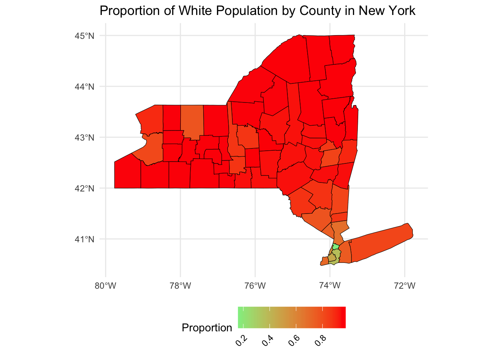
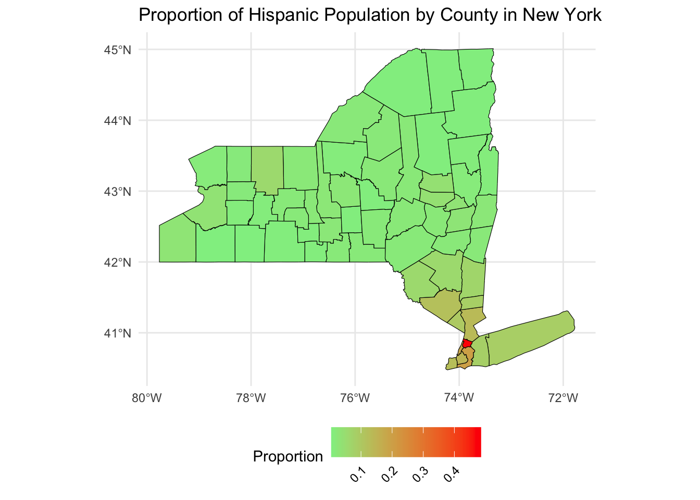

Analysis
Here we provide a detailed analysis using more sophisticated statistics techniques.
Our code for this page is in ‘analysis.qmd’ file.
Introduction
In today’s increasingly complex socioeconomic, understanding the interplay between household composition, educational attainment, and racial demographics is crucial for devising strategies that promote economic equity. Our project seeks to delve into how these factors collectively influence individual income levels across different racial groups. By examining the effects of household weight — a proxy for household size and composition — alongside the educational levels of individuals, we aim to uncover insights into the socioeconomic dynamics that shape income disparities. The intersection of race adds a critical dimension to this analysis, providing a comprehensive understanding of the diverse experiences across demographic groups.
Motivation Questions
Household Weight and Income: How does household weight influence income across different racial groups, and to what extent does it vary between them?
Education and Income: What is the impact of education level on income within these racial categories? How significant is this impact when compared to other demographic factors?
Combined Effects: How do household weight and education interact to influence income across different racial groups?
Visualizations of interested variables and relationships
1. Education and Income
Analyzing Education Level by Race/Ethnicity
This percentage-based heatmap offers a nuanced understanding of educational attainment by providing a proportional representation, which allows for a direct comparison of educational levels relative to the size of each racial and ethnic group. For White, non-Hispanic individuals, the percentage of those with less than a high school education is relatively low at 55.1%. In contrast, Asian, non-Hispanics show a remarkable 7.5% holding graduate degrees, which is the highest percentage among all groups for this level of education.
The statistical implications of these percentages are critical. The data suggests a variance in educational achievement that could be attributed to a range of factors, including economic, social, and cultural influences. The high percentage of White, non-Hispanics with only a high school diploma might reflect cultural issues with higher education, whereas the substantial percentage of graduate degrees among Asian, non-Hispanics could point to a strong cultural emphasis on advanced education. Considering the intertwined relationship between the level of education and income level, this could also suggest why a greater percentage of White people occupy blue collar jobs as compared to Asians.
2. Household Weight and Income
Household Characteristics

The series of graphs vividly illustrate the intersectionality of race, education, and economic outcomes across various demographic groups. The first graph highlights disparities in housing status, showing that White non-Hispanic individuals are significantly more likely to own homes compared to other races, reflecting broader economic advantages.
Weighted Household proportions by Income groups in each Race/Ethnicity

This ownership correlates with the higher income brackets and educational attainment seen in the subsequent graphs, where White non-Hispanics also dominate in higher income ranges and educational levels.
3. Household Weight and Education
Analyzing Impact of Race/Ethnicity on Educational Outcomes:

Conversely, minority groups, particularly Hispanics and Black non-Hispanics, are more represented in lower income brackets and lower educational attainment levels, underlining systemic socio-economic barriers that limit both earning potential and homeownership.
Geographical Map - NY County


The maps revealing income, education, and racial demographics across New York counties illustrate significant disparities that influence economic outcomes. Counties with higher proportions of individuals holding bachelor’s or graduate degrees, predominantly in the New York City area, correspond with the highest average income levels, indicating a strong relationship between higher education and income. Conversely, areas with lower educational attainment, particularly where the most common education level is high school or less, coincide with much lower average wages. Additionally, racial composition impacts economic disparities; counties with a higher proportion of minority populations, especially those where Black or Hispanic individuals are more prevalent, often correlate with lower average incomes, underscoring the intertwined effects of race, education, and economic opportunities.
Statistical Modelling
Model 1: Linear Regression between Household weight, Education, Income group, Race/Ethnicity, Owner/Renter Status, Household Type
Call:
lm(formula = Household_Weight ~ Education_Level + Race_Ethnicity +
Income_Groups + Economic_Development_Region + Owner_Renter_Status +
Household_Type, data = clean_data)
Residuals:
Min 1Q Median 3Q Max
-42.82 -13.48 -5.44 6.77 655.56
Coefficients:
Estimate Std. Error t value
(Intercept) 24.97413 0.32726 76.313
Education_Level2 - High School Diploma -0.05642 0.15096 -0.374
Education_Level3 - Some College -0.10637 0.16239 -0.655
Education_Level4 - Associate's -0.30700 0.18518 -1.658
Education_Level5 - Bachelor's 0.14986 0.16799 0.892
Education_Level6 - Graduate Degree -0.44382 0.17398 -2.551
Race_EthnicityBlack, non-Hispanic 3.67498 0.23357 15.734
Race_EthnicityHispanic 6.67351 0.23580 28.301
Race_EthnicityOther 0.62962 0.37247 1.690
Race_EthnicityWhite, non-Hispanic -1.54112 0.20191 -7.633
Income_Groups$10,000-<$20,000 -0.36185 0.20192 -1.792
Income_Groups$20,000-<$30,000 -0.22285 0.20511 -1.087
Income_Groups$30,000-<$40,000 0.68888 0.20948 3.289
Income_Groups$40,000-<$50,000 -0.25564 0.21584 -1.184
Income_Groups$50,000+ 0.49253 0.18013 2.734
Economic_Development_RegionCentral New York -4.13477 0.22602 -18.294
Economic_Development_RegionFinger Lakes -2.41399 0.22120 -10.913
Economic_Development_RegionLong Island 4.27167 0.21758 19.633
Economic_Development_RegionMid-Hudson 3.14474 0.21838 14.400
Economic_Development_RegionMohawk Valley -6.46534 0.21178 -30.529
Economic_Development_RegionNew York City 4.54950 0.19702 23.092
Economic_Development_RegionNorth Country -7.52647 0.23316 -32.281
Economic_Development_RegionSouthern Tier -5.37256 0.20664 -26.000
Economic_Development_RegionWestern New York -2.35784 0.22488 -10.485
Owner_Renter_StatusRent/Other 8.14099 0.10433 78.029
Household_TypeElderly(60+) Individual 1.16832 0.13652 8.558
Household_TypeOlder(40-59) with children 3.98667 0.13000 30.667
Household_TypeOlder(40-59) with no children 3.76672 0.11700 32.193
Household_TypeYounger(Up to 40) with children 5.47273 0.16109 33.974
Household_TypeYounger(Up to 40) with no children 6.11328 0.16615 36.793
Pr(>|t|)
(Intercept) < 2e-16 ***
Education_Level2 - High School Diploma 0.70860
Education_Level3 - Some College 0.51245
Education_Level4 - Associate's 0.09736 .
Education_Level5 - Bachelor's 0.37236
Education_Level6 - Graduate Degree 0.01074 *
Race_EthnicityBlack, non-Hispanic < 2e-16 ***
Race_EthnicityHispanic < 2e-16 ***
Race_EthnicityOther 0.09096 .
Race_EthnicityWhite, non-Hispanic 2.3e-14 ***
Income_Groups$10,000-<$20,000 0.07313 .
Income_Groups$20,000-<$30,000 0.27725
Income_Groups$30,000-<$40,000 0.00101 **
Income_Groups$40,000-<$50,000 0.23627
Income_Groups$50,000+ 0.00625 **
Economic_Development_RegionCentral New York < 2e-16 ***
Economic_Development_RegionFinger Lakes < 2e-16 ***
Economic_Development_RegionLong Island < 2e-16 ***
Economic_Development_RegionMid-Hudson < 2e-16 ***
Economic_Development_RegionMohawk Valley < 2e-16 ***
Economic_Development_RegionNew York City < 2e-16 ***
Economic_Development_RegionNorth Country < 2e-16 ***
Economic_Development_RegionSouthern Tier < 2e-16 ***
Economic_Development_RegionWestern New York < 2e-16 ***
Owner_Renter_StatusRent/Other < 2e-16 ***
Household_TypeElderly(60+) Individual < 2e-16 ***
Household_TypeOlder(40-59) with children < 2e-16 ***
Household_TypeOlder(40-59) with no children < 2e-16 ***
Household_TypeYounger(Up to 40) with children < 2e-16 ***
Household_TypeYounger(Up to 40) with no children < 2e-16 ***
---
Signif. codes: 0 '***' 0.001 '**' 0.01 '*' 0.05 '.' 0.1 ' ' 1
Residual standard error: 22.6 on 310808 degrees of freedom
Multiple R-squared: 0.1282, Adjusted R-squared: 0.1281
F-statistic: 1576 on 29 and 310808 DF, p-value: < 2.2e-16This model illustrates that higher income groups generally have higher household weights, with the $50,000+ income category showing a significant positive relationship. Also, different regions show different impacts on household weight, with some regions like “New York City” showing a positive association, whereas regions like “Central New York” have a negative association. This suggests regional disparities in economic conditions, demographic compositions, or living conditions. Additionally, with significant positive coefficient for Black, non-Hispanic, this group has a notably higher household weight compared to White, non-Hispanic, suggesting a demographic trend or characteristic prevalent within this group that increases the household weight. Higher education levels (Associate’s degree and above), however, are associated with lower household weight.
Model 2: Multinomial logistic regression with Income disparity across Education, Household Weight, and Race Ethnicity
# weights: 72 (55 variable)
initial value 556946.929899
iter 10 value 477887.632429
iter 20 value 467261.034391
iter 30 value 463870.725984
iter 40 value 442500.718578
iter 50 value 424055.356909
iter 60 value 411251.963412
iter 70 value 406690.904482
final value 406689.281147
convergedCall:
multinom(formula = Income_Groups ~ Education_Level + Household_Weight +
Race_Ethnicity, data = clean_data)
Coefficients:
(Intercept) Education_Level2 - High School Diploma
$10,000-<$20,000 0.17398756 0.1675598
$20,000-<$30,000 -0.06279155 0.4991578
$30,000-<$40,000 -0.47372010 0.6912341
$40,000-<$50,000 -0.69550342 0.8049590
$50,000+ 0.49187800 1.1169909
Education_Level3 - Some College Education_Level4 - Associate's
$10,000-<$20,000 -0.01431515 -0.01698338
$20,000-<$30,000 0.41785261 0.59777409
$30,000-<$40,000 0.71147581 1.02226414
$40,000-<$50,000 0.90884445 1.22852616
$50,000+ 1.47288625 2.07010428
Education_Level5 - Bachelor's
$10,000-<$20,000 -0.2478429
$20,000-<$30,000 0.3401299
$30,000-<$40,000 0.7879517
$40,000-<$50,000 1.1156675
$50,000+ 2.3950944
Education_Level6 - Graduate Degree Household_Weight
$10,000-<$20,000 -0.2369755 -0.002224211
$20,000-<$30,000 0.3523127 -0.003644953
$30,000-<$40,000 0.8183086 -0.002923348
$40,000-<$50,000 1.2770752 -0.005413830
$50,000+ 2.9816037 -0.003944505
Race_EthnicityBlack, non-Hispanic Race_EthnicityHispanic
$10,000-<$20,000 -0.06600965 0.006152891
$20,000-<$30,000 -0.31185696 -0.137885734
$30,000-<$40,000 -0.25109052 -0.112421246
$40,000-<$50,000 -0.34631296 -0.109406970
$50,000+ -0.55132819 -0.253783683
Race_EthnicityOther Race_EthnicityWhite, non-Hispanic
$10,000-<$20,000 -0.0262662 0.4407918
$20,000-<$30,000 -0.1909129 0.3470999
$30,000-<$40,000 -0.3580024 0.4413430
$40,000-<$50,000 -0.3137825 0.4573344
$50,000+ -0.4733333 0.3533307
Std. Errors:
(Intercept) Education_Level2 - High School Diploma
$10,000-<$20,000 0.04435088 0.02392510
$20,000-<$30,000 0.04503688 0.02538493
$30,000-<$40,000 0.04718596 0.02705010
$40,000-<$50,000 0.04937492 0.02912248
$50,000+ 0.03683256 0.02238016
Education_Level3 - Some College Education_Level4 - Associate's
$10,000-<$20,000 0.02764059 0.03887774
$20,000-<$30,000 0.02872337 0.03852824
$30,000-<$40,000 0.03007312 0.03900004
$40,000-<$50,000 0.03191908 0.04057540
$50,000+ 0.02471228 0.03285722
Education_Level5 - Bachelor's
$10,000-<$20,000 0.03441659
$20,000-<$30,000 0.03435462
$30,000-<$40,000 0.03488013
$40,000-<$50,000 0.03612170
$50,000+ 0.02832791
Education_Level6 - Graduate Degree Household_Weight
$10,000-<$20,000 0.04393958 0.0003427134
$20,000-<$30,000 0.04316178 0.0003565812
$30,000-<$40,000 0.04308288 0.0003588261
$40,000-<$50,000 0.04330674 0.0003858698
$50,000+ 0.03489819 0.0002848635
Race_EthnicityBlack, non-Hispanic Race_EthnicityHispanic
$10,000-<$20,000 0.04738577 0.04761856
$20,000-<$30,000 0.04811484 0.04830471
$30,000-<$40,000 0.04975214 0.05026589
$40,000-<$50,000 0.05190374 0.05222769
$50,000+ 0.03837231 0.03880342
Race_EthnicityOther Race_EthnicityWhite, non-Hispanic
$10,000-<$20,000 0.07142358 0.04264048
$20,000-<$30,000 0.07275167 0.04260176
$30,000-<$40,000 0.07789195 0.04405970
$40,000-<$50,000 0.07984876 0.04534036
$50,000+ 0.05846483 0.03417443
Residual Deviance: 813378.6
AIC: 813488.6 According to the above result, there is a strong positive relationship between having a graduate degree and being in the highest income. Education and race/ethnicity are significant predictors of income category, with education showing a particularly strong gradient effect. Differences in income distribution are also evident across different racial/ethnic groups. For example, In general, the coefficients for Black, non-Hispanic individuals are negative across most income categories compared to the White, non-Hispanic reference group, suggesting lower odds of being in higher income group. For Hispanic, it also tends to be negative across higher income group, showing a pattern similar to the Black, non-Hispanic group but with varying degrees
Using Anova to get p-value for the statistical significant for each coefficient
Loading required package: carData
Attaching package: 'car'The following object is masked from 'package:purrr':
someThe following object is masked from 'package:dplyr':
recodeAnalysis of Deviance Table (Type II tests)
Response: Income_Groups
LR Chisq Df Pr(>Chisq)
Education_Level 44277 25 < 2.2e-16 ***
Household_Weight 257 5 < 2.2e-16 ***
Race_Ethnicity 2140 20 < 2.2e-16 ***
---
Signif. codes: 0 '***' 0.001 '**' 0.01 '*' 0.05 '.' 0.1 ' ' 1The output from the ANOVA suggests that all the predictors in multinomial logistic regression Education Level, Household Weight, and Race/Ethnicity—are highly statistically significant in predicting the different income groups. Education Level has a particularly strong influence on income group classification, as indicated by a very high likelihood ratio chi-square statistic (LR Chisq) of 44277 with 25 degrees of freedom and a p-value less than 0.0001. Race/Ethnicity shows substantial influence with an LR Chisq of 2140 and a p-value less than 0.0001, and Household Weight also proves significant with an LR Chisq of 257.
Predictions
Visualize of Coefidence Intervals for Education on Income

White, non-Hispanic with the positive coefficients in all income groups and an increasing trend as income increases suggest that being White, non-Hispanic increases the likelihood of being in higher income groups relative to the highest income group. For Hispanic, Other, and Black, non-Hispanic, with generally negative coefficients across income groups, demonstrating the decrease in the likelihood of being in higher income brackets relative to the highest income bracket.
Impact of Household Weights on Income

The graph depicting the predicted probability of income groups by household weight reveals distinct trends across different income brackets. The probability of being in the lowest income group ($0 to <$10,000) increases significantly as household weight increases, suggesting that larger household sizes may be associated with lower incomes. Conversely, the probability of being in the highest income bracket ($50,000+) decreases as household weight increases. For the middle income groups, from $10,000 to <$50,000, there is a relatively steady decrease in probability with increasing household weight, though the magnitude of change is less pronounced than in the lowest and highest income groups. This visual representation indicates a clear negative association between household weight and higher income levels, supporting the interpretation that larger households tend to have lower per capita incomes.
Multinomial regression on the impact of Education Level, Race Ethnicity on Income Group
# weights: 66 (50 variable)
initial value 556946.929899
iter 10 value 462727.963949
iter 20 value 459141.295292
iter 30 value 431255.553112
iter 40 value 422766.741479
iter 50 value 414504.412298
iter 60 value 406832.529532
final value 406817.787210
converged
The graph displaying the predicted probability of income groups by education level and race reveals significant racial disparities in economic outcomes. Notably, the probability of being in the highest income bracket ($50,000+) clearly increases with higher education levels for all racial groups, but the slope is steeper and higher for White, non-Hispanic individuals compared to other racial groups, indicating a greater likelihood of reaching higher income levels with increased education. In contrast, Black, Hispanic, and Other racial groups show consistently lower probabilities of being in this income bracket, even at higher educational levels, suggesting systemic barriers or disparities in the conversion of educational attainment into economic success. This visualization underscores the complex interplay of race, education, and income, highlighting persistent inequality in economic opportunities across different racial and ethnic groups.
Flaws and Limitations
Our analysis do highlight some important disparities across race, economic regions, household, and the impact of education and income levels. The varied impact across these predictors underscores the complexity of factors that suggests areas where policy might focus, particularly in addressing regional disparities and supporting different household types.
Nevertheless, there are limitations in our work on modeling. Our prediction on the relationship between household weight and higher incomes shows a straightforward trend, but this could be affected by outliers or non-linear factors not apparent in a linear model. Also, the relatively low R-squared value in our initial linear model may suggest additional variables and perhaps more complex models could be considered to better capture the underlying aspects affecting Household Weight. In the future, we plan to collect more data, add more features such as age, sex, geographical location, industry of employment, etc. and advance our models to provide more insights into the relationships among Household Weight, Income, Education, and Race.